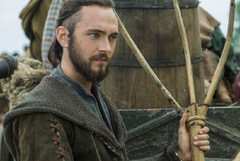

Athelstan é um personagem principal da primeira, segunda e terceira temporada. Ele é interpretado por George Blagden (Londres, 28 de dezembro de 1989) é um ator inglês e apareceu pela primeira vez em "Wrath of the Northmen". Ele reaparece em visões durante a quarta temporada.